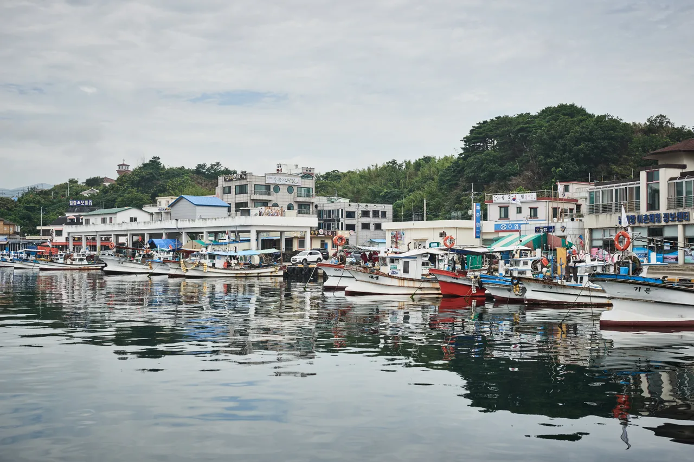
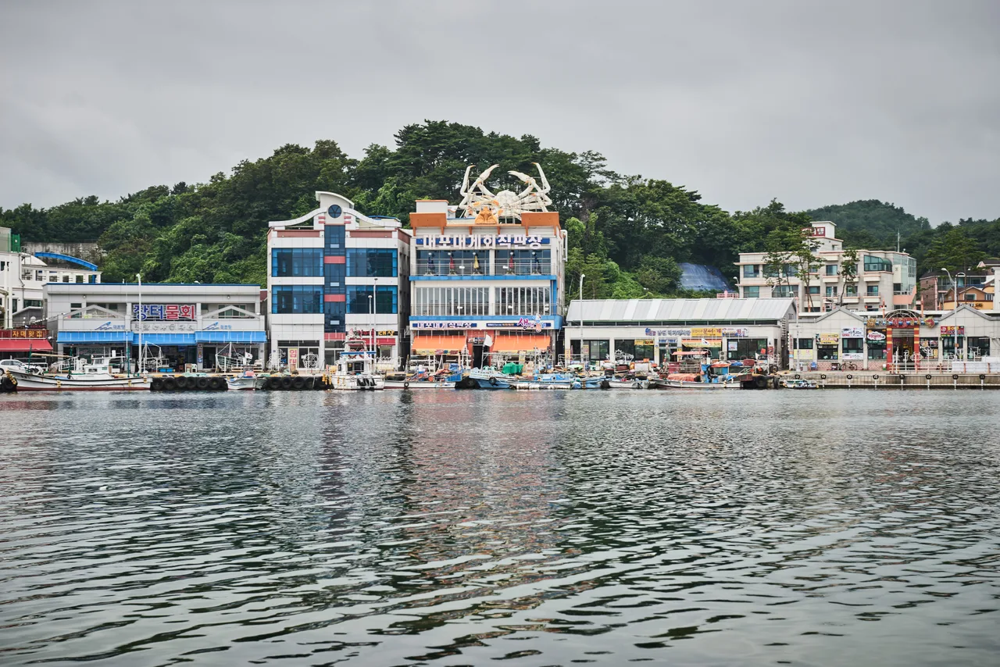

▲ 정동진 해변. 바다와 철길이 나란히 붙어 있다 ⓒ 한국관광공사 (공공누리 제1유형)
여행 기사는 보통 어디에 갈지를 이야기합니다.
자동차 매체가 쓰는 여행은 조금 다릅니다.
어떻게 갈지가 먼저입니다. 그리고 7번 국도는 가는 것 자체가 목적이 되는 드문 길입니다. 부산에서 시작해 고성까지, 남한 구간만 약 480km입니다.
1. 방향이 먼저입니다
7번 국도를 이야기할 때 가장 먼저 정해야 할 것은 출발지가 아닙니다. 어느 방향으로 달릴 것인가입니다.
| 방향 | 바다 위치 | 특징 |
|---|---|---|
| 남 → 북 (부산 → 고성) | 조수석 쪽(오른쪽) | 동승자가 바다를 본다 · 정차 없이 감상 |
| 북 → 남 (고성 → 부산) | 운전석 쪽(왼쪽) | 운전자가 가깝다 · 시선 분산 위험 |
📍 방위부터 따져보면 답이 나옵니다
동해는 한반도의 동쪽에 있습니다. 그러니 북쪽을 향해 달리면 동쪽은 진행 방향 오른쪽이 됩니다. 한국은 좌핸들이므로 오른쪽은 조수석 쪽입니다.
반대로 남쪽으로 내려가면 바다는 왼쪽, 즉 운전석 쪽에 놓입니다. 이러면 운전자가 계속 그쪽을 보게 됩니다. 해안 국도는 굽은 구간과 마을 진입로가 많아 시선이 분산되면 위험합니다.
바다를 조수석 쪽에 두면 운전자는 도로에 집중하고 동승자가 풍경을 봅니다. 사진을 찍기에도 유리합니다. 부산에서 고성으로 올라가기를 권하는 이유입니다.
일출까지 감안하면 방향이 더 분명해집니다. 해도 동쪽에서 뜨므로, 북쪽으로 달리는 동안에는 바다와 일출이 모두 조수석 쪽에 있습니다. 반대로 남쪽으로 내려가면 아침 해가 운전석 쪽에서 정면으로 들어와 눈부심까지 겹칩니다.

▲ 부산 송정해수욕장. 7번 국도의 공식 기점은 부산 중구다 ⓒ 한국관광공사 (공공누리 제1유형)
2. 진짜 바다에 붙는 구간
7번 국도가 전 구간 내내 바다를 끼고 달리는 것은 아닙니다. 부산에서 출발하면 한동안 도심 구간이 이어지고, 포항을 지나면서부터 본격적인 해안 도로가 됩니다.
| 구간 | 성격 |
|---|---|
| 부산 ~ 울산 ~ 경주 | 도심 구간이 많아 드라이브 성격은 약함 |
| 포항 ~ 영덕 ~ 울진 | 여기부터 본격 해안 · 어촌과 절벽이 번갈아 나타남 |
| 삼척 ~ 동해 ~ 강릉 | 바다와 가장 가까운 구간 — 이 기사의 핵심 |
| 양양 ~ 속초 ~ 고성 | 해변과 항구가 이어짐 · 설악산 진입로와 만남 |
📍 하루에 다 달릴 생각은 접는 편이 낫습니다
7번 국도 전체는 수백 킬로미터에 이릅니다. 고속도로라면 하루에 가능하지만, 국도는 다릅니다. 신호가 있고, 마을을 지나고, 제한속도가 자주 바뀝니다.
지도 앱이 알려주는 소요 시간에 정차 시간을 더해야 합니다. 이 길에서는 멈추는 것이 목적이기 때문입니다.

▲ 울산 강동 화암 주상절리. 도심을 벗어나면 해안 지형이 나타나기 시작한다 ⓒ 한국관광공사 (공공누리 제1유형)

▲ 포항 삼정해수욕장. 포항을 지나면서부터 본격적인 해안 도로가 된다 ⓒ 한국관광공사 (공공누리 제1유형)
3. 삼척에서 강릉까지 — 멈출 만한 지점
| 지점 | 성격 | 차로 갈 때 참고 |
|---|---|---|
| 삼척 | 해변이 길게 이어짐 | 비교적 한산한 구간 |
| 동해 | 항구와 해안 절벽 | 구간별로 도로가 바다에 바싹 붙음 |
| 정동진 | 일출 명소 · 바다와 철길 | 일출 시간대 진입 정체 주의 |
| 강릉 경포 | 호수와 해변이 붙어 있음 | 주차 공간이 넓은 편 · 성수기엔 혼잡 |
✅ 정동진 일출을 노린다면
· 일출 시각 1시간 전에는 도착해야 주차와 자리를 확보할 수 있습니다
· 새벽 진입로는 편도 1차로 구간이 있어 한 번 막히면 빠져나가기 어렵습니다
· 돌아 나올 때가 더 막힙니다 — 해 뜨자마자 우르르 빠져나갑니다
· 조금 늦게 출발해 인파가 빠진 뒤 해변을 걷는 선택지도 있습니다

▲ 삼척 장호 일대. 강릉·정동진보다 한산해 드라이브에 집중하기 좋다 ⓒ 한국관광공사 (공공누리 제1유형)

▲ 동해 무릉계곡. 해안 국도에서 잠깐 내륙으로 들어가면 만나는 단풍 명소다 ⓒ 한국관광공사 (공공누리 제1유형)

▲ 강릉 주문진등대. 핵심 구간의 북쪽 끝에서 만나는 지점이다 ⓒ 한국관광공사 (공공누리 제1유형)
4. 국도라서 달라지는 것들
고속도로에 익숙한 상태로 국도에 들어서면 리듬이 어긋납니다.
| 항목 | 국도에서는 |
|---|---|
| 제한속도 | 구간마다 자주 바뀜 — 마을 진입 시 급격히 낮아짐 |
| 신호 | 교차로 신호가 있음 — 평균 속도가 낮아짐 |
| 단속 | 구간·고정식 단속이 촘촘한 편 |
| 주유·충전 | 구간에 따라 간격이 벌어짐 |
| 보행자 | 마을 구간에서 갑자기 나타남 |
📍 전기차라면 계획이 하나 더 필요합니다
동해안 국도변에도 충전기가 늘었지만, 고속도로 휴게소만큼 촘촘하지는 않습니다. 특히 울진~영덕처럼 인구가 적은 구간은 간격이 벌어집니다.
출발 전에 경로상 충전소를 확인해두는 편이 안전합니다. 고속도로 휴게소 충전 인프라 현황은 휴게소 29곳 131기에서 다뤘습니다.

▲ 영덕 강구항 진입로. 국도는 이렇게 마을과 상권을 그대로 통과한다 ⓒ 한국관광공사 (공공누리 제1유형)
5. 언제 가는 게 좋을까
| 시기 | 장점 | 단점 |
|---|---|---|
| 가을 | 습도가 낮아 수평선이 선명 · 한산함 | 일교차 큼 |
| 여름 | 해수욕 가능 | 극심한 정체 · 숙박비 상승 |
| 겨울 | 가장 한산 · 눈 덮인 해안 | 결빙 구간 주의 |
| 봄 | 기온이 온화 | 안개·미세먼지로 시야 제한 |
드라이브만 놓고 보면 가을이 가장 낫습니다. 여름 성수기에는 길 자체를 즐길 수 없습니다. 정체 구간에서 바다는 보이지만 운전은 고역이 됩니다.
⚠️ 겨울에 간다면
· 해안 도로는 바닷바람으로 노면이 얼기 쉽습니다
· 그늘진 굽잇길과 교량 위가 특히 위험합니다
· 겨울용 타이어 교체 기준은 영상 7도입니다
· 산간 우회로는 통제될 수 있어 출발 전 확인이 필요합니다

▲ 양양 남애항. 강릉을 지나 북쪽으로 올라가면 어항이 이어진다 ⓒ 한국관광공사 (공공누리 제1유형)

▲ 속초 대포항. 국도변 항구 상권은 식사와 주유를 함께 해결할 수 있는 지점이다 ⓒ 한국관광공사 (공공누리 제1유형)
6. 떠나기 전에
✅ 장거리 국도 주행 준비
· 타이어 공기압 — 짐이 많으면 최대 하중 기준으로
· 냉각수 — 정체 구간에서 부담이 가장 큽니다
· 2시간마다 휴식 — 해안 국도는 단조로워 졸음이 옵니다
· 연료·충전 여유 — 국도는 주유소 간격이 일정하지 않습니다
· 비상용품 — 트렁크 체크리스트 참고
장거리 주행 전 점검 항목은 장거리 정비 체크리스트에 정리해 뒀습니다.

▲ 고성 삼포리 해변. 남에서 북으로 올라가면 마지막에 만나는 구간이다 ⓒ 한국관광공사 (공공누리 제1유형)
7. 정리
7번 국도는 부산 중구를 기점으로 강원 고성까지 이어지는 길입니다. 남한 구간만 약 480km이며, 목적지보다 길 자체가 목적이 되는 드문 도로입니다.
동해는 한반도 동쪽에 있으므로, 남에서 북으로 올라가야 바다가 조수석 쪽에 놓입니다. 운전자는 도로에 집중하고 동승자가 풍경을 봅니다. 아침 해도 같은 방향이라 눈부심을 피할 수 있습니다.
바다와 가장 가까운 구간은 삼척~동해~강릉입니다. 다만 고속도로가 아니라 국도이므로 신호와 마을 구간이 섞이고 평균 속도가 낮습니다. 지도 앱의 소요 시간에 멈추는 시간을 더해 잡아야 합니다.